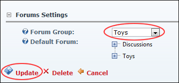

A Single Forum Group display in an instance of the Forum Module
How to pull content from the parent forum into a child forum using the Forum module. The parent forum is the forum where all forum groups and forums are created. The child forum is an instance of the existing parent module, set to only show the select forum group.
Note: These settings are stored on a per page/module basis so even a copy of a module can have a different default group.

A Single Forum Group display in an instance of the Forum Module